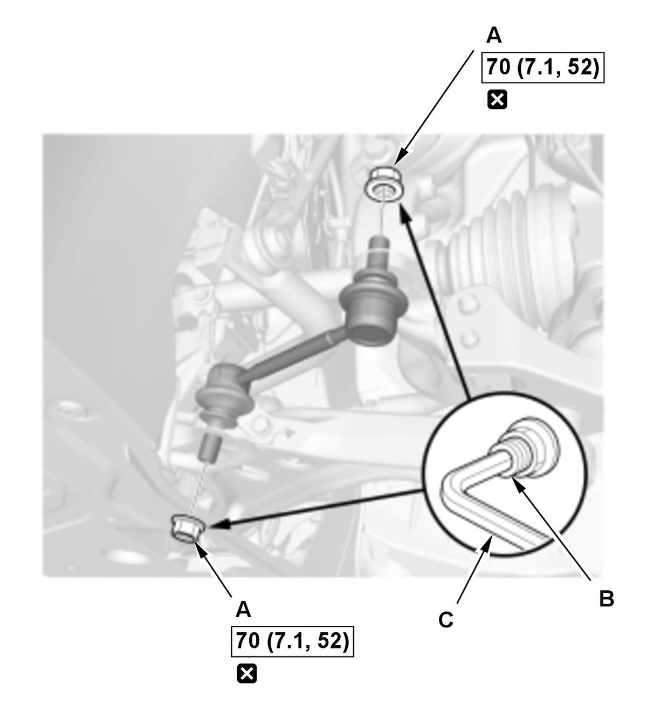

Removal and Installation
NOTE: How to read the torque specifications .
- Vehicle - Lift
- Front Wheel - Remove
- Air Intake Plate - Remove
- Stopper Link - Remove

Courtesy of HONDA, U.S.A., INC.1. Remove the self-locking nuts (A) while holding the joint pin (B) with a hex wrench (C).
NOTE: Use a new self-locking nuts during reassembly. - All Removed Parts - Install
1. Install the parts in the reverse order of removal.